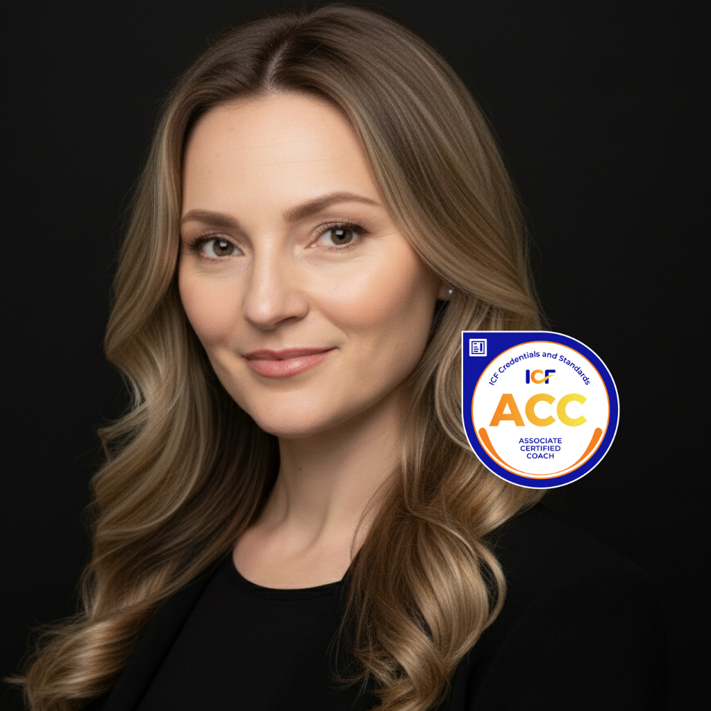

Come usare l'AI dove il Sales è davvero complesso — quando bisogna analizzare un contesto articolato, preparare una strategia, dimostrare il valore di un'offerta o coordinare più team su un'unica opportunità.
Immaginiamo una tipica trattativa enterprise: più stakeholder, requisiti tecnici, concorrenti, documenti del cliente, informazioni interne e più team che devono lavorare insieme. È esattamente con questo contesto che il team lavora durante tutto il percorso.
L'AI aiuta a strutturare le informazioni sul cliente, preparare uno stakeholder briefing, identificare le possibili obiezioni e capire cosa manca ancora per una preparazione di qualità.
Nel lavoro entrano documenti del cliente, requisiti tecnici, dati sul prodotto, informazioni sulla concorrenza e altre fonti. Il team impara a dare all'AI il contesto giusto, a verificare le informazioni e a costruire una Value Narrative basata su dati reali.
Quando in una trattativa sono coinvolti Sales, Proposal / Deal Desk, Engineering, Finance, Legal e altre funzioni, il compito va oltre un singolo prompt. Il team analizza l'intero processo: cosa può fare l'AI, quali dati servono e dove la decisione resta all'uomo (Human Approval).
Da una reale situazione commerciale emerge un AI Use Case strutturato, che può essere discusso e sviluppato all'interno dell'azienda.
Tre fasi: capire il contesto e provare l'approccio, lavorare sul caso reale, portare i risultati nel lavoro quotidiano.
Discovery Call · Demo Session
Deep Discovery · Tre sessioni pratiche
Mentor Pack · Use-Case Acceleration · Advanced Lab
Una conversazione breve per capire il contesto del team, i tipici Sales-task e scegliere un esempio adatto per la Demo.
Il team prova l'approccio su una situazione commerciale concreta e vede come l'AI può funzionare all'interno di un processo reale. L'obiettivo è capire il metodo in pratica e individuare dove può essere utile per il proprio team.
Dopo la conferma del programma, analizziamo il team più in profondità: ruoli dei partecipanti, processi Sales reali, tipologie di trattative, dati e documenti disponibili, vincoli interni.
Con Sales Director e i manager che conducono le trattative: priorità strategiche, principali difficoltà, esempi di trattative andate bene.
Con Proposal / Bid Manager e il team che lavora su documenti e processi: come funziona il processo RFP, dove si perde tempo, quali dati sono disponibili.
Per tutto il percorso il team lavora su un caso concreto: una trattativa complessa con un grande cliente enterprise, più stakeholder con priorità diverse, una RFP in arrivo e una pressione sul prezzo. Ogni sessione porta il caso un passo avanti.
Contesto del cliente, stakeholder, storia della relazione, materiali disponibili e situazione attuale della trattativa.
L'AI aiuta a strutturare le informazioni, preparare uno stakeholder briefing, individuare possibili obiezioni e identificare le domande da approfondire.
Strumenti riutilizzabili per preparare qualsiasi incontro commerciale complesso, senza ripartire da zero.
Documenti del cliente, requisiti tecnici, materiali interni, dati sul prodotto, informazioni sulla concorrenza e altre fonti rilevanti.
Il team impara a lavorare con un contesto ampio, confrontare dati, individuare lacune e costruire una Value Narrative basata su informazioni verificabili.
Un'argomentazione difendibile, con fonti chiare e punti da validare già identificati prima di presentarla al cliente.
Un processo che coinvolge Sales, Proposal / Deal Desk, Engineering, Finance e Legal — con dati incompleti, condizioni fuori standard e più team da coordinare.
Il team definisce quali task può supportare l'AI, quali dati servono e dove la decisione resta all'uomo (Human Approval): pricing, impegni contrattuali, bid/no-bid.
Un processo strutturato per rispondere a RFP complesse, con ruoli chiari e un AI Use Case pronto per essere discusso internamente.
Il team esce con l'esperienza di aver applicato l'AI su una reale situazione commerciale, con materiali di lavoro pronti e un AI Use Case strutturato da sviluppare ulteriormente all'interno dell'azienda.
Dopo la formazione il lavoro continua su trattative reali, RFP e processi interni. In quel momento può emergere una domanda concreta, un materiale da verificare o una situazione difficile da affrontare da soli. Il Mentor Pack permette di lavorare con un mentore in una sessione individuale o di gruppo e analizzare insieme quella situazione — dalla preparazione di un incontro difficile alla revisione di una Value Narrative, di un workflow o di un AI Use Case.
Disponibile solo per i partecipanti al programma.
Un nuovo stakeholder, un cambiamento nella posizione del cliente, una domanda sulla trattativa in corso.
Un Briefing, una Value Narrative o un'offerta preparata con l'AI, da analizzare e migliorare insieme.
Un Sales-task che si ripete: insieme si chiarisce problema, processo, dati, ruoli e passo successivo.
Quando il tema riguarda un partecipante specifico o la sua trattativa.
Quando il tema riguarda più partecipanti o l'intero team.
Se durante la formazione è emerso un use case con un reale potenziale di business, è possibile svilupparlo in uno sprint di consulenza dedicato. In 4–6 sessioni nell'arco di 6–10 settimane, il team percorre la strada dall'idea al business case strutturato.
Il risultato è un iPOC-ready business case da portare a una decisione interna: Go / Revise / Stop. L'implementazione tecnica rimane responsabilità del team AI interno del cliente — qui il lavoro è collegare il problema commerciale ai requisiti della soluzione.
Ruolo: bridge tra Sales e il team AI interno.
Si attiva dopo il programma base, quando c'è già esperienza nell'applicare l'approccio e si vuole andare più in profondità su un tema specifico.
Contratti complessi e pluriennali, multi-stakeholder mapping, scenario modelling.
Pipeline review, coaching del team, forecasting, AI adoption e dashboard.
Il team lavora su un'unica situazione commerciale e vede come l'AI può aiutare nelle diverse fasi della stessa trattativa. Il contesto resta sempre riconoscibile.
Briefing, Value Narrative, Source Map, Workflow Map, AI Use Case Canvas — i materiali vengono creati durante il percorso e restano al team.
L'AI aiuta ad analizzare e preparare le informazioni. Le decisioni su prezzi, condizioni commerciali e impegni restano in mano al Sales — e questo confine viene costruito esplicitamente durante il percorso.
I partecipanti imparano i principi di Good Prompting, Context Engineering e Agentic AI. Si applicano con diversi strumenti AI, inclusi quelli già in uso in azienda.
Per i team Sales che lavorano su trattative B2B complesse, con un lungo ciclo di vendita e più funzioni coinvolte nel processo.
Più stakeholder, lungo Sales cycle, decisioni che coinvolgono diverse funzioni del cliente.
Lavoro con clienti dove la decisione richiede una comprensione profonda del contesto.
Gare d'appalto, grandi volumi di documenti, coordinamento tra più funzioni interne.
Team che vogliono capire dove l'AI può cambiare concretamente il lavoro quotidiano.
| Se nel team c'è… | Il formato giusto |
|---|---|
| Una situazione concreta o una trattativa da analizzare | Mentor Pack |
| Un AI Use Case con potenziale reale da portare a una decisione interna | Use-Case Acceleration |
| La volontà di sviluppare competenze Sales o AI più avanzate | Advanced Lab |
